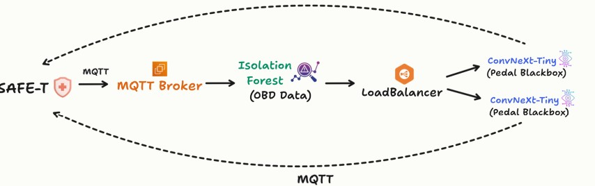

고령운전자의 급발진 사고를 예방하는 안전운전 앱 서비스
개발기간: 2024.08.01 ~ 2024.08.30
플랫폼: Android, iOS
개발인원: 5명 (팀 프로젝트)

프로젝트 개요
고령 운전자의 페달 오조작으로 발생하는 급발진 사고가 증가하고 있으며, 이러한 사고는 즉각적인 대응이 어려워 더 큰 피해로 이어질 수 있습니다. 이를 예방하기 위해, 운전 중 밟고 있는 페달 정보를 실시간으로 제공하는 AI 기반 서비스를 개발했습니다. 이 서비스는 위급 상황에서 운전자가 빠르게 판단할 수 있도록 도와 급발진 사고를 사전에 방지하는 것을 목표로 하고 있습니다.
주요 기능 및 구현 과정
- 1 페달 블랙박스 화면 팝업: 급가속 시 촬영 중인 페달 블랙박스를 화면에 송출 및 경고 화면 송출
- 2 밝은 페달 음성 알림: 급가속 상황 시 밟고 있는 페달을 음성을 통해 전달
- 3 자동 신고 문자 발송: 사용자의 위치 정보 기반 112 상황실에 자동 구조 요청
- 4 대처 가이드라인 음성 제공: 급가속 상황 시 차량 정보 기반 대처 가이드라인을 음성으로 제공
담당 역할 및 수행 업무

- 1 이상탐지 모델 서빙 (Isolation Forest): 차량 OBD 데이터로부터 급발진 상황의 RPM, 가속 등을 감지하는 머신러닝 Isolation Forest 모델 구축 및 Flask로 모델 서빙 API 구축
- 2 페달 이미지 분류 모델 서빙 (ConvNeXt): 이상 데이터 감지 후 페달 블랙박스 영상을 통해 페달을 구분하는 딥러닝 ConvNeXt 구축 및 Flask로 모델 서빙 API 구축
- 3 실시간 통신 및 부하분산 처리 (MQTT통신, LoadBalancing): 차량 OBD 스캐너에서 받아온 실시간 주행 정보를 MQTT 통신으로 처리, 실시간 처리를 위해 ConvNeXt 모델 부하분산 처리